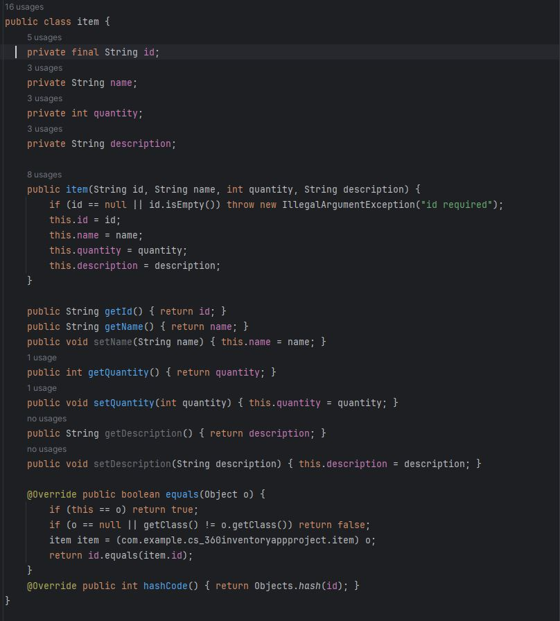
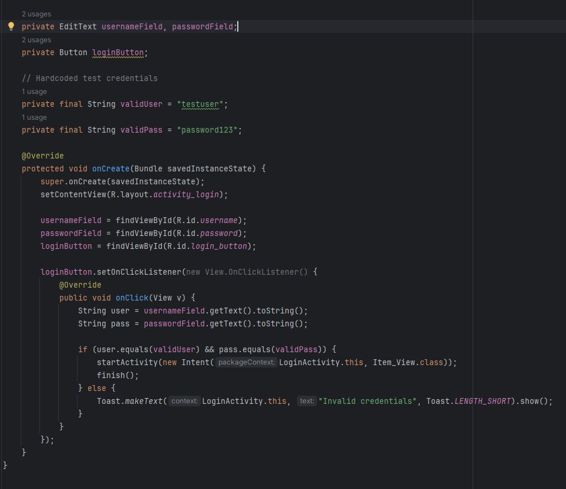

Software Design and Engineering
The artifact I picked is my Inventory App Project from CS 360. It’s an Android app that manages items for a warehouse in an inventory app. For this milestone I updated the code to use a hash map instead of lists. Prior to this I didn’t have the lists code built out. However, the app was still intended to use lists instead of hash maps when I made it. This change makes adding, finding, and updating items much faster and also makes the code easier to maintain. I chose this artifact for my portfolio because it helps me better improve my code and show a good range of skills. The switch to a hash map highlights my skills with data structures and software design. It also shows that I understand how the right design choices can directly improve performance. Also fleshing out my mobile app is a good display of what I can do between software design and UI/UX design. I met the outcome I planned for improving the design of my code with better data structures than what was originally intended. I also got more practice debugging and making sure my layouts matched the Java code. I mainly used what I learned in CS-465. In that class we made a vacation site that had a list of trips. That helped me get started on this improvement. Next I’d like to add a proper login screen so the app feels more complete. That would give me a chance to show my skills in authentication and user management.
Downloads
Screenshots

